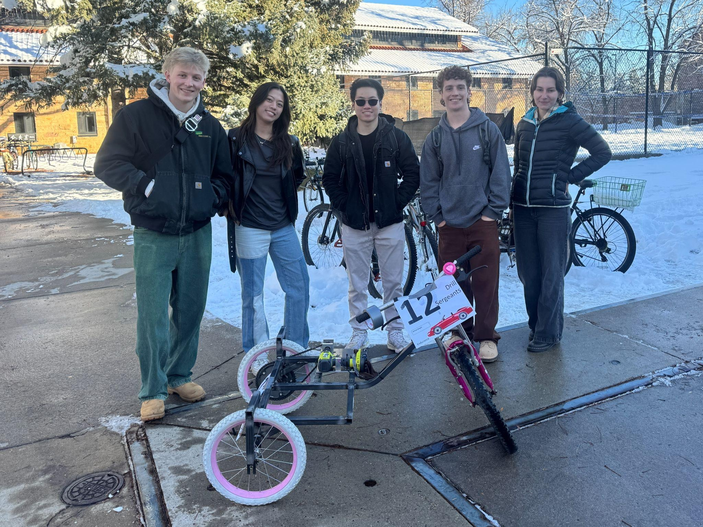
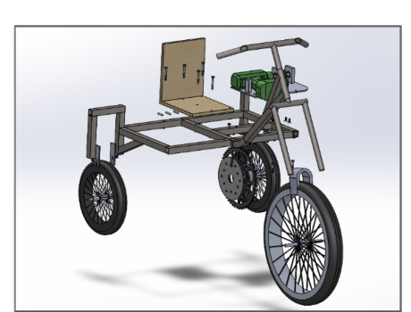
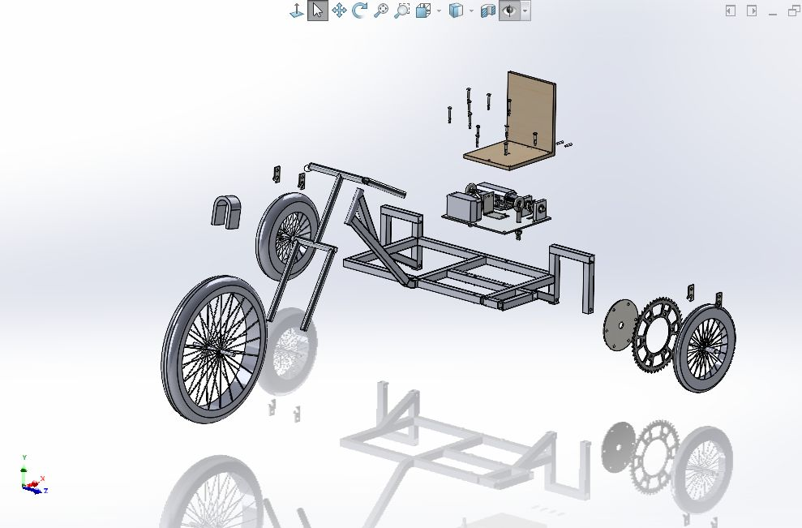
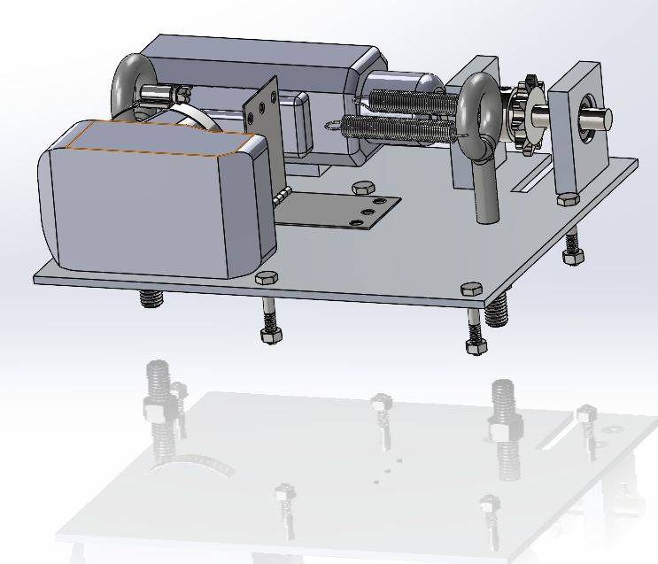
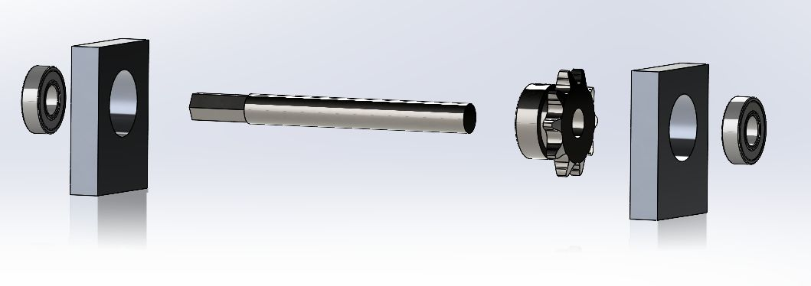
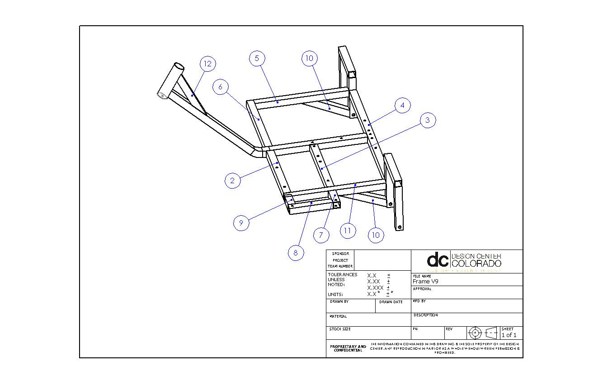
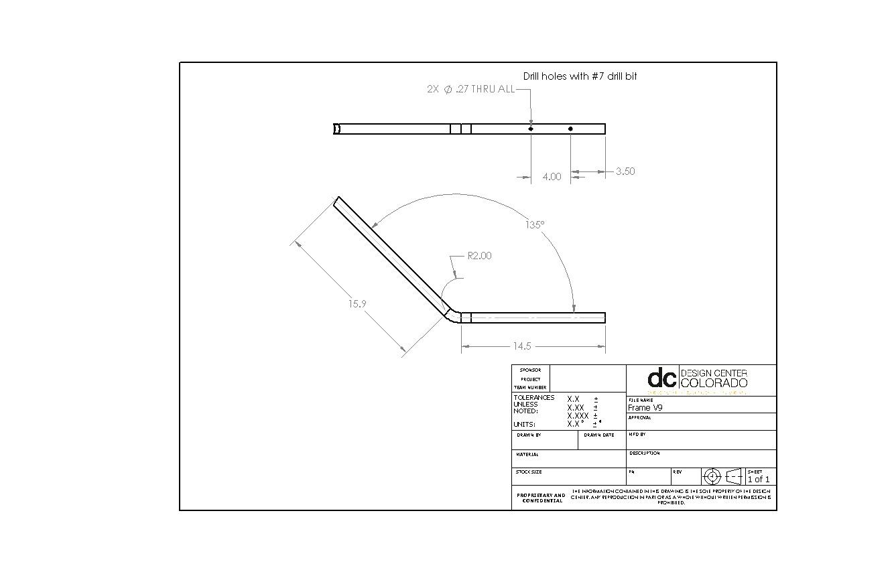
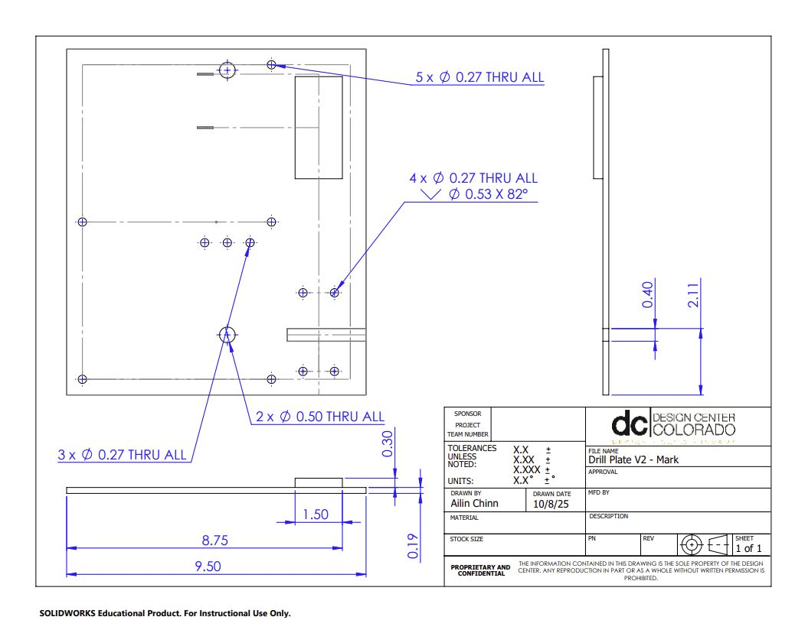
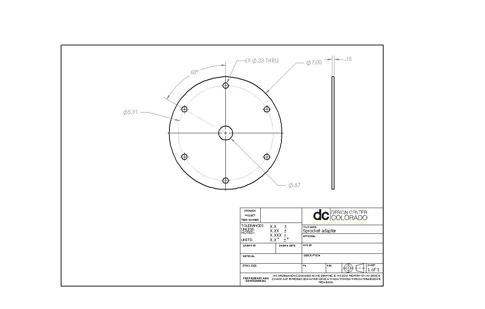

Engineering case study
Drill-Powered Tricycle
Complete CAD ownership, structural analysis, and manufacturing documentation for an endurance-focused vehicle.

The Challenge
Our team designed and manufactured a drill-powered vehicle for a 30-minute endurance event. The design needed to balance low mass, structural integrity, drivetrain alignment, manufacturability, and budget.
My Contribution
I completed the entire CAD design and took responsibility for FEA, beam-loading hand calculations, and the engineering drawings used in manufacturing reviews. I also managed project progress and coordinated design work.
My focus was making the assembly coherent: integrating the frame, wheel supports, drill plate, drivetrain, throttle mechanism, and custom interfaces while keeping the design practical to manufacture.
Mechanical Design
The early frame concept created difficult welded joints and did not provide adequate support on both sides of the wheel axles. The revised design used a compact tricycle layout, double-shear wheel supports, and a low seat. The drill plate position and wheel geometry were adjusted to align the chain drive.
A spring-return throttle mechanism translated cable movement into drill-trigger actuation. The sprocket adapter included both 110 mm and 130 mm bolt patterns to accommodate the available chainring.
Analysis & Manufacturing Review
I used beam-loading hand calculations and FEA in the design process to examine critical structural members. The frame analysis considered rider and vehicle loading, bending stress, deflection, and factor of safety. I used these calculations to assess the selected tubing and identify critical load-carrying members.
I was responsible for the manufacturing-review engineering drawings. I documented the assembly and custom parts with dimensions and manufacturing details. Reviews addressed part fit, joint access, mounting-hole placement, countersinks, and internal radii compatible with waterjet cutting.

Assembly Views
The design-review views show how the frame, wheels, seat, and drivetrain fit together. The exploded assemblies make the component interfaces and assembly order easier to review before fabrication.

Complete SOLIDWORKS assembly showing the frame, wheel supports, seat, and drivetrain as separate components.
View full size
The drill, shaft supports, and trigger mechanism integrated on the mounting plate.
View full size
The shaft, sprocket, bearings, and supports shown separately to illustrate their mounting interfaces.
View full sizeThe design review specifies a 5:1 chain-drive reduction using a 10-tooth driving sprocket and a 50-tooth driven chainring. Alignment between the shaft, sprocket, and driven wheel was a key assembly consideration.
Engineering Drawings
Selected drawings from the team’s design review document the assembly and custom components. These complement my CAD and manufacturing-review responsibilities by showing the geometry, hole locations, and component interfaces used to communicate the design.

An isometric frame view with component callouts for the structural members.
View full size
The frame member drawing specifies the bend geometry, lengths, and mounting-hole locations.
View full size
Orthographic views document the plate dimensions, through holes, and countersunk mounting features.
View full size
The adapter drawing documents the custom geometry and bolt pattern that connect the drivetrain components.
View full sizeEngineering Lessons
CAD, analysis, and fabrication have to inform one another. Small changes in wheel support, chain alignment, or joint geometry can reshape an entire assembly. This project strengthened my ability to carry a design from concept through review and into manufacturing.